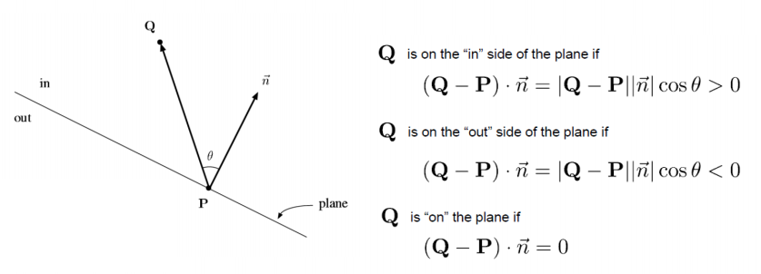

-
Gráfico por computador
- Definición
- Cause gráfico
- Técnica de modelado
- Visibilidad
- Iluminación
- Buffer de Stencil
- Buffer de Acumulación
- Texturas
- Coordenadas de Textura
- Aliasing en Texturas
- Alpha Blending
- Reflejos
- Sombras
- OpenGL
- Textura
Gráfico por computador
Definición
Las técnicas relacionadas con la generación de imágenes en un computado, su proceso consiste en un conjunto de operaciones sobre un modelo informático e datos(Modelado) para obtener una representación gráfica(Renderizado).
La imagen puede describirse como una representación de la variación de una magnitud o un parámetro sobre una superficie, casi siempre será la intensidad de la luz. Una imagen está compuesta de pixeles y se almacenan de forma digital con una precisión y número de bits.
La imagen que percibimos depende de geometría, características de la luz, características de los materiales.
Cause gráfico
- Se divide el proceso de generación en etapas
- Las salidas de una etapa son las entradas de la siguiente
- Cada etapa debe tener sus propios recursos
- Permite paralelizar etapas
- Aplicación: Selecciona las primitivas a pintar y configura el cause
-
Transformaciones
- Se transforma de coordenadas del modelo a coordenadas del mundo, el orden en el que se aplican las coordenadas influye en el resultado final.
- Se transforma de coordenadas del mundo a coordenadas de la cámara.
-
Proyección: Transformación las coordenadas
sobre el plano de vista (2D), ademas hay que pasar de
coordenadas normalizadas a coordenadas del frame buffer.
- Ortográfica
- Perspectiva
- Viewport: Definir en que parte de la imagen se va a pintar
-
Iluminación: Calcular los colores
- A nivel de vertice
- A nivel de fragmento
- Ensamblado: Agrupa vertices en primitivas
-
Visibilidad I
- Culling
- Clipping
- Rasterizado: Transforma las primitivas en fragmentos (píxel + datos asociados), el valor de los parámetros del fragmento se interpola
- Sombreado: Colorea los fragmentos
- Visibilidad II: Z-buffer para determinar pixel ocultado por otro
- Operaciones con la imagen: blending, motion blur, cartoon filter, gaussian blur, antialiasing
Técnica de modelado
Un modelo suele tener
- Distribución espacial y de la forma de los componentes
- La conectividad
- Información adicional para su uso
Propiedades deseables en un modelo
- Precisión
- Dominio
- Ausencia de ambigüedad
- Unicidad
- Cierre
- Compacta
- Eficiencia
Modelos de alambre
La información que se tiene sobre el objeto es un conjunto de líneas
Modelos de mallas
Es conocida como representación por fronteras, es necesario definir sus vértices, aristas y caras. Para distinguir fuera y dentro, se usa la dirección de la normal. Las caras planas son la forma de representación más extendida y aproxima superficies curvas con precisión dependiente de la resolución. La norma de un vértice a partir de las normales de las caras adyacentes.
- Listas no indexadas
- Listas indexadas: cada vértice se representa con un índice sobre una lista de coordenadas
Y además:
- Atributos para el renderizado: normales corlo, coordenadas de textura
- Atributos para la simulación: masa, elasticidad
- Atributos para la animación: peso del vértice para un determinado hueso
Representaciones de fronteras no poliédricas
- Parches bicúbicos de Bézier
- Parches de Catmull-Rom
- Splines uniformes
Modelos multiresolución
Se basan en el concepto de LOD (Level of detail)
- Distancia a la cámara
- La orientación respecto a la cámara
- Posición de las luces
Otros
- Modelos de alambre: Se representa por un conjunto de líneas
- Primitivas parametrizables
- Representaciones de desplazamiento o barrido
- Volúmenes contenedores: Facilita la detección de colisiones y los objetos complejos pueden ser aproximados mediante una jerarquía de objetos más simples.
- Representaciones de partición espacial
- Geometría sólida constructiva: Un objeto se almacena como un árbol binario
- Modelos basados en campos escalares: Superficies definidas por un conjunto de ecuaciones, Las superficies se deforman en la proximidad de otras, dando lugar a transiciones suaves y permitiendo obtener formas complejas utilizando un número pequeño de dichas primitivas.
Visibilidad
Determinar qué elementos son visibles desde un punto de vista dado y cuales no. Debemos eliminar del cause aquellos elementos que no son visibles en eapas tempranas.
Etapa de aplicacion
La CPU indica a la GPU que objetos debe de mostrar. Si sabemos que algo no se va a ver, pues no se le pasa. p.j. basados en técnicas de subdivisión del espacio.
- BSP (Binary Space Partition): navegación por edificios y ciudades
- KD-Trees, se utilizan para acelerar algoritmos basados en Ray Tracing
En el cause gráfico
A nivel de primitiva
Clipping
- Eliminar partes fuera del volumen de frustum.

Divide los vértices en dos listas, parte visible y parte invisible
OpenGL proyecta todo antes de hacer clipping, culling, se hace despues y es más facil ver sus coordenadas están o no en -1 y 1. Puede originar apariciones/desapariciones repentinas (utilización de niebla para aminorarlo).
Recorte en el plano normal al eje “Y”
- La proyección en perspectiva al volumen auxiliar es no lineal en la coordenada Z
- Esto provoca que se pierda resolución para los objetos situados cerca del plano “far” cuando el plano “near” está próximo al origen.
Culling
Eliminación de caras ocultas que no sean visibles por la cámara dada su orientación. Se analiza el signo del producto escalar del vector de visualización con la normal a la superficie.
A nivel de primitiva o píxel
Algoritmo del pintor
Se dibujan todos los polígonos que aparecen en la escena empezando por los más alejados, de manera que los polígonos situados en primer plano se dibujan sobre los polígonos situados en el fondo.
Buffer de profundidad (z-buffer)
Determinar la profundidad (coordenada z) de cada fragmento. El Z-buffer está inicialmente vacío. Cada vez que un fragmento se dibuje, la coordenada z del fragmento es comparada con el valor actual de dicha posición en el buffer.
- Si es menor, se sobrescribe el buffer de color y se actualiza buffer de profundidad con su z.
- Si es mayor, éste se descarta.
Ray Tracing
Iluminación

Entendemos por modelo de iluminación el cálculo de la intensidad de cada color (RGB por ejemplo) para cada punto de la escena, que puede intervenir
Se ilumina un punto teniendo en cuenta exclusivamente
- Las luces activas
- El material del objeto
- La orientación del objeto con respecto a la luz.
- La orientación y posición de la cámara respecto a la superficie y a las fuentes de luz
- El modelo de iluminación
Luces
Luces direccionales
- Luces situadas en el infinito
- Paralelos
Luces puntuales
- Luces sin dimensión
- Emiten luz radial
Luz focal
- Luz situada en el espacio con una dirección principal
- Puede definirse una zona de penumbra
Luces de área
- Luces con 1 o más dimensiones.
- NO utilizadas en modelos de iluminación local
Modelos de iluminación
Modelos locales
Sólo se considera la interacción fuentes de luz-objetos.
- Forward rendering: proyectar los objetos sobre el plano de vista
- Ray casting (backward rendering): trazar rayos desde la cámara a los objetos
- Deferred rendering: a se pre-procesan los datos y en la siguiente se calcula el color de cada píxel
Modelo de iluminación de Phong
El modelo de iluminación define la ecuacion para calcular las intensidades dado los componentes necesarios
$$
\lambda = k_{(emissive, \lambda)} + I_{(A, \lambda)}
k_{(a, \lambda)} + \sum_{I \in lights} f_{att}^I \Big( I_{(a,
\lambda)} k_{(a, \lambda)} + I_{(d, \lambda)} k_{(d, \lambda)}
\cos{\theta} + I_{(e, \lambda)} k_{(e, \lambda)} \cos^{n}{\alpha}
\Big)
$$
$\lambda$ suele reducirse a 3 colores básicos (R, G, B).
Componente ambiental
Proviene de todas las direcciones e ilumina todas las caras del objeto por igual.
Se modela con
- Intensidad ambiental: aporte de una determinada luz a la intensidad ambiental ($0 \le I_a \le 1$)
- Coeficiente de reflexión ambiental: ($0 \le k_a \le 1$)
- No depende a la distancia a la fuente ni la orientación
$$
I_a k_a
$$
Componente difusa
Proviene de una dirección y se refleja en todas direcciones.
Se modela con
- Intensidad de la fuente ($0 \le I_d \le 1$)
- Coeficiente de reflexión difusa: ($0 \le k_d \le 1$)
- $N$: normal de la superficie en el punto P.
- $L$: vector de incidencia de la luz.
$$
I_d k_d \cos{\theta} = I_d k_d (L \cdot N)
$$
Componente especular
Proviene de una dirección y se refleja en una dirección. La mayor parte de los rayos de luz que proceden de una fuente se reflejan en su superficie en una dirección determinada. Si la cámara se sitúa en la trayectoria de dichos rayos, captará una mayor intensidad en dicho punto.
Se modela con
- Intensidad del componente especular de la fuente de luz $I_e$
- coeficiente de reflexión especular ($0 \le k_e \le 1$)
- vector de posición del observador $V$
- vector de incidencia de la luz $L$
- coeficiente de la rugosidad de la superficie $n$
$$
I_e k_e \cos^{n}{\alpha} = I_e k_e (R \cdot
V)^n\\\\
R = 2 (L \cdot N)N - L
$$

Factor de atenuación
Se puede atenuar la luz en función de la distancia
$$
f_{att} = \frac{1}{c_1 + c_2 d + c_3 d^2}
$$
Iluminación emisiva
Se ocupa de simular objetos que emiten luz, se simula con un valor fijo independiente de la luz $k_{emissive}$
Modelo de sombreado
Define cuando cuando y donde aplica la ecuacion para obtener la intensidad de cada puntos.
Sombreado plano
Todos los puntos de un polígono se sombrean con el mismo color
gl.glShadeModel(GL2.GL_FLAT);
Correcto si se verifica:
* Fuente de luz en el infinito.
* Observador en el infinito.
* El polígono representa una superficie plana real del objeto que
se modela y no es una aproximación de un objeto curvo
Sombreado de Gouraud
A partir de la normal en cada vértice, se evalúa la ecuación de iluminación para cada vértice. Se realiza una interpolación bilineal para obtener la intensidad en cada punto interno.
- Problemas con la reflexión especular
- se realizan en la etapa de vértices
gl.glShadeModel(GL2.GL_SMOOTH);
Sombreado de Phong
Aplazando el cálculo de la iluminación hasta el paso de sombreado del fragmento. Por lo tanto, se interpolan las normales de los vértices y las propiedades de color y se aplica la fórmula de Phong para calcular el color por píxel en lugar de por vértice
Modelos globales
Se consideran también las interacciones mutuas entre objetos. se tienen en cuenta el resto de elementos de la escena. Suelen estar basados en modelos físicos de la luz (óptica, radiación térmica, radiación electromagnética, etc…)
Ray trazing
- Solo se tienen en cuenta los rayos que llegan al punto de vista.
- Se trazan rayos desde el centro de la proyección
-
Al colisionar con un objeto se calcula
- El aporte de todas las fuentes de luz
- El rayo reflejado
- El rayo refractado
-
Se continúa hasta que
- El rayo tiene poca energía
- Sale de la escena
- Choca con un objeto difuso
-
Resuelve bien
- Sombras, reflexiones y refracciones
- Luz difusa directa
-
Tiene problemas con
- La reflexión difusa
- Sombras suaves (luces con área)
- coste es elevado
Radiosity
Radiancia
Photon Mapping
Buffer de Stencil
glEnable(GL_STENCIL_TEST);
glStencilFunc(parameters);
El buffer de estarcido es muy útil para limitar zonas espaciales donde poder dibujar
Buffer de Acumulación
glAccum(parameters)
El buffer de acumulación sirve para capturar el buffer de color en un fotograma y aplicarle acumulaciones del color de otro fotograma/s. Una posible aplicación consiste en simular el efecto de estela de un objeto en movimiento.
Texturas
La utilización de texturas aumenta el realismo visual de la imagen sin aumentar número de polígonos.
Unidimensionales
Bandas que varían en una sola dirección, poco usadas
Bidimensionales
Suelen ser cuadradas y potencias de 2.
Texturas cúbicas
Extensión de las texturas bidimensionales, muy usadas en mapeos de entornos.
Tridimensionales
Datos volumétricos
Diffuse Map
Almacena coeficientes difusas que refleja la luz difusa
Specular Map
Almacena coeficientes especular que refleja la luz especular
Emissive Map
Simulan objetos que emiten luz.
Lighting Map
Las sombras y luces estáticas precalculada
Alpha Blending
La información de transparencia en escala de grises
Bump Map
Almacena la profundidad del fragmento, en escalas de grises.
Normal Map
Modificación de normales para dar sensación de relieve.
Height Map
Almacenan las alturas en escalas de grises.
Displacement Map
Se almacena el desplazamiento de fragmentos o vértices en escalas de grises.
Coordenadas de Textura
El rango de coordenadas en el espacio de la textura es entre 0 y 1. Las coordenadas de textura se proporcionan para cada vértice y son interpoladas en el pipeline del procesador gráfico.
Mapeado Plano
- Se proyecta la figura sobre un plano.
- Se debe definir la orientación del plano
Mapeado Cilíndrico
El objeto se envuelve en un cilindro. Las coordenadas del objeto se transforman a coordenadas cilíndricas (r, θ, y). A la hora de proyectar la textura sólo se tiene en cuenta el ángulo y la altura.
Aliasing en Texturas
En gráficos, el término aliasing (espacial) se refiere al escalonado que se aprecia en la frontera de las primitivas debido a la limitada resolución de la pantalla.
Minificación
Un píxel se corresponde con muchos texels
Magnificación
Un téxel se corresponde con muchos pixels
Box filter
Se utiliza el texel mas cercano.
Bilinear filter
Utiliza cuatro texeles e interpola linealmente los valores.
Mipmapping
Consiste en proporcionar además de la textura original un conjunto de versiones más pequeñas de la textura, cada una un cuarto más pequeña que la anterior.
Supersampling
Se toman las 4 esquinas del píxel y se proyectan. Se ponderan los 4 valores segun las distancias.
Pre-filtering
Se trata el píxel como una región en la textura. Se pondera en función de la región ocupada.
Alpha Blending
La intensidad del nuevo pixel vendrá dada por
$$
rgb = \alpha \cdot rgb + (1 - \alpha) \cdot rgb
$$
-
Activar el cálculo de la transparencia
glEnable(GL_BLEND);
-
Especificar la función de cálculo.
glBlendFunc(GL_SRC_ALPHA , GL_ONE_MINUS_SRC_ALPHA);
-
Desactivar la actualización del buffer de profundidad.
glDepthMask(GL_FALSE);
Dibujar los objetos transparentes
-
Deshabilitar las transparencias y volver a habilitar el buffer de profundidad
glDisable(GL_BLEND);
glDepthMask(GL_TRUE);
Reflejos
Se utiliza la posición de la cámara y la normal del objeto para generar la coordenada de textura.
Sombras
- Dividir los objetos en sombreadores
- Crear un buffer de color en blanco y negro
- Deshabilitar texturas, luces …
- Renderizar los objetos sombreadores desde el foco lumínico
- Almacenar el buffer de color en una textura.
- Renderizar la escena proyectando la textura sobre los objetos sombreados, utilizando una matriz de proyección que se usó para generar la textura.
Puede generar “z-fighting” con el plano.
glEnable(GL_POLYGON_OFFSET_FILL)
glPolygonOffset
OpenGL
Open GL es un estándar multiplataforma que define un API para la creación de contenido 2D y 3D que permitan aprovechar las capacidades de computo de dispositivos gráficos. Los fabricantes deben cumplir las especificaciones.
- API de bajo nivel
- Multiplataforma
- Multilenguaje
- Independiente del hardware
- Define las etapas de un pipeline común para todos los tipos hardware.
- Es una máquina de estado que define un contexto
- Parte de la información se almacena en el cliente (CPU) y parte en el servidor (GPU).
Modelo de programación
OpenGL se ejecuta de acuerdo a un estado.
-
Main:
- Inicialización del contexto y Framebuffer.
- Creación de la ventana.
- Loop principal.
-
Loop principal:
- Chequear eventos y tomar decisiones.
- Actualizar el sistema.
- Redibujar.
- Redibujar:
-
Limpiar el Framebuffer.
- Cambiar estado de dibujado y dibujar.
Framebuffer
Está compuesto por la información de color de cada pixel que conforma la imagen. Es común que las aplicaciones gráficas utilicen más de un buffer de color, “DoubleBuffer”, un buffer se muestra en pantalla (front buffer) se dibuja sobre otro (back buffer). Cuando el back buffer está listo para ser mostrado, se hace un glutSwapBuffers entre las referencias a donde comienza el front y el back buffer.
- buffers de color
- buffer de profundidad (Z-buffer)
- stencil buffer
- multisampling
GLUT
La gestión de ventanas, periféricos de entrada (ratón/teclado) y el pintado.
Etapas del cauce
Etapa de vértices (programable)
- Entrada: atributos (color, posición, coordenadas de textura, normales…) + …
- Salida: posición proyectada (variable especial) + variables variantes (propiedades de los vértices transformadas o creadas) + …
Ensamblado
Cambio en el tipo de datos procesado. Agrupa vértices en puntos, líneas, triángulos…
Etapa geométrica (programable, opcional):
- Entrada: primitivas + variables variantes de la etapa de vértices + información de adyacencia + …
- Salida: nuevas primitivas -> posición proyectada de todos los vértices de las nuevas primitivas (variable especial) + variables variantes de los vértices de dichas primitivas + …
Clipping y culling
glEnable(GL_CULL_FACE)
Rasterizado
- Transforma la primitiva a espacio de pantalla.
- Crea fragmentos.
- Cambio de tipo de datos
Etapa de fragmentos (programable)
- Entrada: variantes interpolados en la etapa de rasterizado
- Salida: color y profundidad.
Operaciones por fragmento: Z-buffer, blending…
Operaciones con el frame buffer
Shaders
Un shader define un programa concurrente para un conjunto de entradas. Las instancias son independientes entre sí.
Variables
- Atributos: Propiedades de los vértices.
- Variables uniformes: Parámetros de solo lectura que se mantienen constantes para todos los hilos y en todas las etapas programables
- Variables variantes: Variables de salida del shader de vértices (propiedades de vértices) y entrada del shader de fragmentos (propiedades de fragmentos).
- Variables predefinidas: Variables propias de cada etapa con una función especial.
- Variables locales
- Valores de píxeles concretos del frame buffer
Shader de vértices
Shader de fragementos
Configuración
- Crear y compilar los shaders
- Asociar los shaders a un programa
- Dibujar con los shaders
GLSL
- Atributos: Se declaran con el calificador in, p.j. in vec3 myPosition
- Variables uniformes: Se declaran con el calificador uniform, p.j. uniform mat4 pvm
- Variables para siguiente etapa: Se declaran con el calificador out, p.j. out vec3 myNormal
- Variables locales: No requieren modificador, p.j. vec3 myTempVec
-
Variables predefinidas:
- in int gl_VertexID
- in int gl_InstanceID
- in vec4 gl_FragCoord
- in bool gl_FrontFacing
- in float gl_ClipDistance
- in vec2 gl_PointCoord
- in int gl_PrimitiveID
Acceso
.x, .y, .z, .w posición o dirección
.r, .g, .b, .a color
.s, .t, .p, .q coordenadas de textura
- myColor.xyz
- myColor.rgb
Vertex Buffer Object
Un VBO es un buffer que se crea en el espacio de memoria del servidor. Puede ser dos tipo GL_ARRAY_BUFFER o GL_ELEMENT_ARRAY_BUFFER
- Geometría.
- Color.
- Normales.
- Coordenadas de textura.
- Índices
- Se crea un identificador para el buffer: glGenBuffers
- Se enlaza el buffer para poder usarlo: glBindBuffer
- Se suben los datos: glBufferData
- Se asigna al atributo: glVertexAttribPointer
- Se activa el atributo: glEnableVertexAttribArray
- Se liberan recursos: glDeleteBuffers
Cuando se asigna un atributo location se puede sacar con glGetAttribLocation, o viendo layout (location = 1) in vec3 inColor
Index Vertex Buffer Object
Vertex array object
Agrupa los vbos y cuando activa vao activa todos los vbo con sus configuraciones.
- Creación: glGenVertexArrays
- Activar: glBindVertexArrays
- Asocia con vao: glBindBuffer
- Configra vbo: glVertexAttribPointer
- Acitva vao y todos sus vbos: glEnableVertexAttribArray
-
Pintar
-
Pintado con un modelo indexado
- Se activa: glBindBuffer
- Pintado: glDrawElements
-
Pintado con un modelo no indexado
- Pintado: glDrawArrays
-
Pintado con un modelo indexado
- Destrucción: glDeleteVertexArrays
Textura
Cualquier etapa puede acceder a textura a través de un “sampler” con texture
- Entrada: accesibles desde los shaders.
- Salida: bufferes para el renderizado
Parámetros
- El tipo: define la disposición de las imágenes que forma la textura.
- El tamaño: limitado por la versión.
- El formato de la imagen: igual para todas las imágenes que forman la textura.
- Parámetros de muestreo.
Pasos
- Creación: glGenTextures
- Activación: glBindTexture
- Se define el tamaño, el formato interno y el contenido: glTexStorage2D, glTexImage2D, glTexSubImage2D
- Generar midmaps y utiliza automáticamente: glGenerateMipmap
- Configurar: glTexParameteri
- Enlazar con texture unit: glActiveTexture, glBindTexture
- Borrado: glDeleteTexture